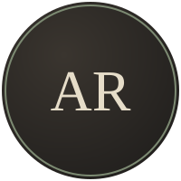

About the Team
Marginalia is a two-person project for Assignment #1. Below is a short biography for each of us — who we are, what we're studying, and what kind of books tend to end up on our nightstands.

Akerke Ramazan
Pages built: Home, About Us
Second-year student, Group 2503. Built the site's structure and homepage, and put together this bio section. Favourite genre: gothic fiction and anything with a library in the first chapter.
Gabidin Kaldybek
Pages built: Excerpts, Contact
Second-year student, Group 2503. Built the excerpts archive and the contact form, and keeps our reading log honest. Read the short bio on the Contact page for more.
A Few Things We Both Like
- Reading with tea instead of coffee, always
- Annotating books in pencil, never pen
- Dim lighting and a genuinely quiet room
- Old libraries more than new bookstores
How This Project Came Together
- We agreed on a theme — a shared "book excerpt" journal — before writing any code.
- We built one shared stylesheet so every page would feel consistent.
- We tested every link and image path before calling a page finished.